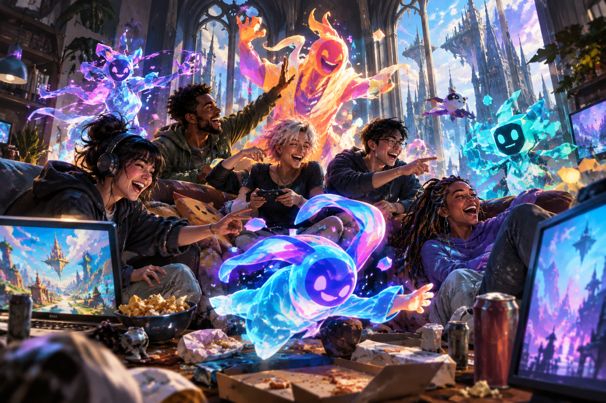
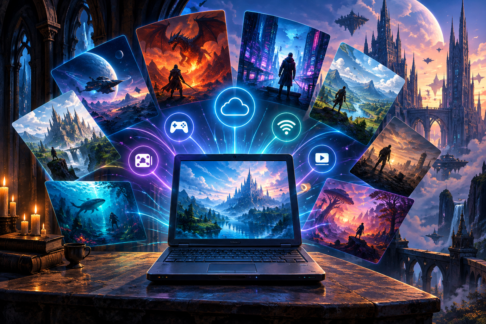
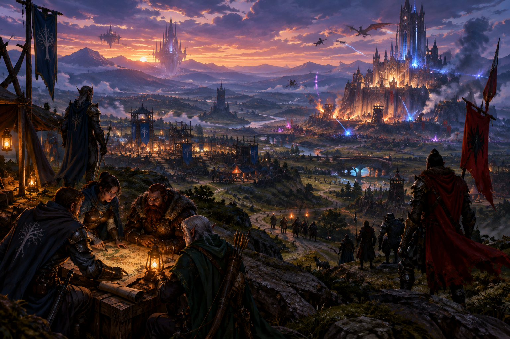
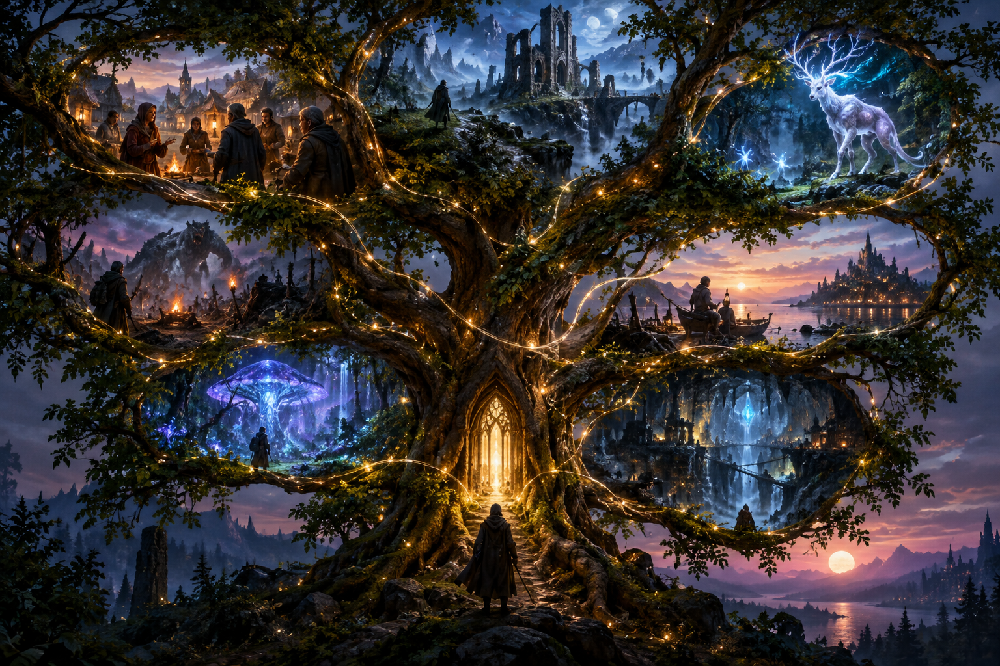
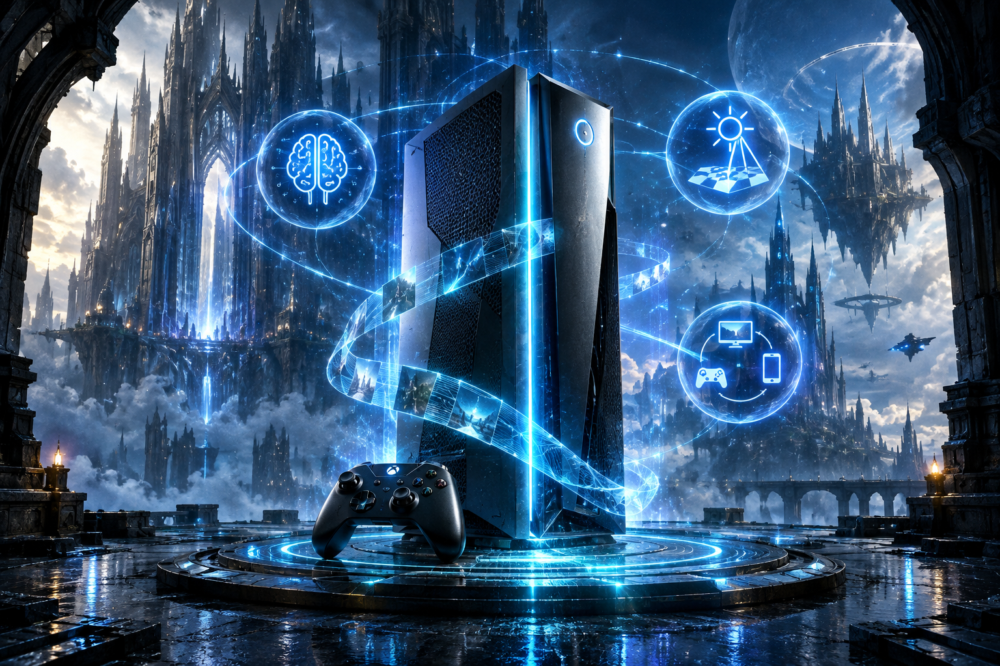

Jesters at the Table: How ‘Friendslop’ Games Brought Chaos and Laughter to Gaming Culture in 2026
Inexpensive, hilariously chaotic ‘friendslop’ games are capturing the hearts of millions in 2026. What draws players to these experiences, and how are they transforming social interaction in gaming culture?
READ THE STORY ↗
Spec Changers: How Cloud Gaming is Redefining the PC in 2026
Cloud gaming in 2026 has shifted the meaning of PC requirements, letting gamers play high-end titles on modest machines. What does this mean for hardware upgrades and who really needs a gaming rig today?
READ THE STORY ↗
Risk and Reward: The Open-World PvP Renaissance in MMORPGs of 2026
MMORPGs are experiencing a dramatic revival of open-world PvP systems in 2026, challenging conventions around safety, community, and competition. What forces are driving developers and millions of players back to high-stakes, emergent gameplay—and how are today's games striking a new balance between chaos and inclusion?
READ THE STORY ↗
Side Stories, Central Impact: The Narrative Revolution of Side Quests in 2026 RPGs
Side quests have evolved far beyond mere tangents or fetch-quests. In the latest wave of RPGs, these optional stories have blossomed into some of the medium’s richest, most impactful narrative experiences. We explore how—and why—that shift happened.
READ THE STORY ↗
Project Helix and the New Frontier: How Microsoft's Hybrid Console Will Transform Co-Op Gaming
Microsoft’s Project Helix isn’t just another console upgrade—it’s a bold, hybrid vision targeted at reshaping the technology and culture of cooperative console gaming. Here’s how Helix’s unique hardware advances, deeper compatibility, and the Xbox Labs initiative aim to empower the next era of playing together.
READ THE STORY ↗